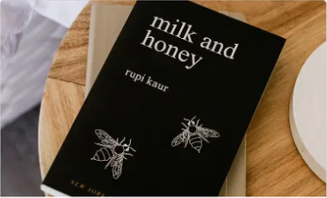

Khám phá những giá trị tâm linh và triết lý đặc sắc của người phương Đông qua góc nhìn của các học giả phương Tây.
Mua ngayNghệ thuật thu phục lòng người, nói chuyện đúng đích và xây dựng những mối quan hệ tốt đẹp bền vững.
Mua ngayCâu chuyện hành trình đi tìm kho báu của người chăn cừu Santiago và nghe theo tiếng gọi của trái tim.
Mua ngay